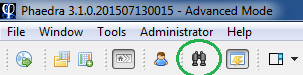
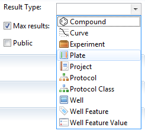
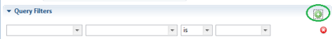
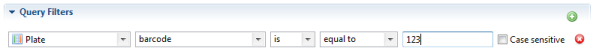
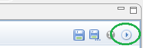
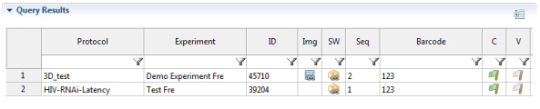
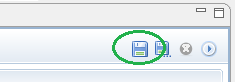
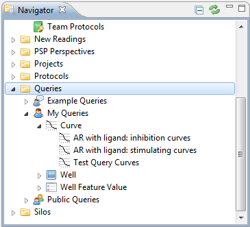

Phaedra offers a query system that allows you to find any item based on one or more of the item's properties. Some examples are:
To perform a query, open the query view using the binoculars icon in the toolbar:

First, specify the type of items you're looking for (plates, wells, curves, ...) in the Result Type field.

If you expect to find a large amount of items, but you only need to see a few, use the Max results option to limit the result set. This can speed up the query significantly. By default, a query is limited to 100 results.
Next, narrow down the query using the Add Filter button in the Query Filters section.

For example, if you're looking for plates, you could add a filter stating that the plate's barcode must be equal to "123".

There are many filters available, depending on the result type you selected in the Query Settings section. To remove a filter, click on the red cross button to the right of the filter.
To execute the query, click on the Run button in the top right of the query view.

The requested items will be searched for, and the results will be displayed in the Query Results section.

The query result table is very flexible, and allows you to perform many actions directly by right-clicking on items in the table.
For example, suppose you are searching for wells where the raw Cell Count feature is less than 10. After executing the query, you can select the wells that have been found, and immediately reject them by right-clicking and selecting Reject Well(s).
All queries can be saved. This means you can compose a complex query using multiple criteria, and then save it so you can re-run the query later without having to build it all over.
To save a query, follow these steps:

Once the query has been saved, you can access it at any time, from any computer, using the Navigator view. Select Queries > My Queries to see your personal queries, or Queries > Public Queries to see the queries that you have shared with other users, or vice versa. Double-click on a query to open its query view.
